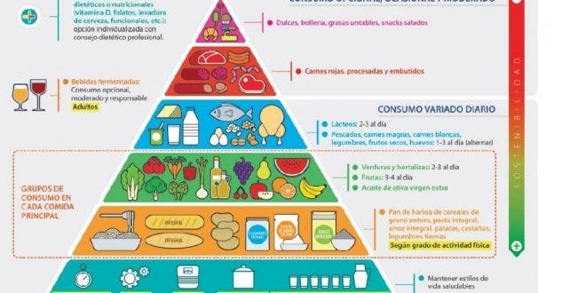

Los organismos oficiales utilizan la pirámide nutricional para trasladar las recomendaciones nutricionales en mensajes fáciles y atractivos para la población. Para elaborar estas guías alimentarias se basan en la pirámide de la alimentación saludable de la OMS. Laura González, responsable de Nutrición y Salud de Nestlé, explica los diferentes niveles de la pirámide.
La forma triangular de la pirámide nutricional nos orienta sobre la frecuencia y las cantidades que debemos consumir de diferentes alimentos. En los primeros eslabones, se sitúan los alimentos que más peso han de tener en la alimentación diaria. A medida que vamos subiendo de niveles, aparecen otros alimentos que hay que consumir en menor cantidad.
En el vértice e sitúan alimentos de consumo opcional y que en caso de consumirse, ha de ser ocasionalmente. La pirámide de alimentación saludable actual se presentó en diciembre de 2016 y tiene como novedades más destacables que en la base no hay alimentos. Está conformada por recomendaciones para mantener un estilo de vida saludable.
